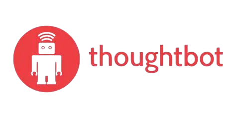

Written by thoughtbot, your expert partner for design and development
Twenty-four refactor-from-retro commits in a week. How the management system started refactoring itself.
Rob Whittaker - April 28, 2026
We’re experimenting with two new CSS functions to clean up our logo marquee code.
Elania Natario - April 24, 2026
Week three of building a management system with Claude Code. Seventeen commits in one day, a command that lasted 24 hours, and the realisation that commands are conversations.
Rob Whittaker - April 28, 2026
Sally fixes a bug without AI, then invites Claude to try.
Sally Hall - April 22, 2026
Supply chain attacks are getting more common. RubyGems might be next. Here’s how to help the ecosystem be safer.
Matheus Richard - April 21, 2026
Slow development isn’t always a code problem. It’s often a process one, especially in regulated industries. Here’s how navigating change to embrace a shared agile process helped one of our clients start finishing ahead of schedule.
Michelle Taute - April 20, 2026
Automatically filter sensitive information from your RubyLLM conversations before it reaches third-party providers.
Steve Polito - April 17, 2026
OPEN SOURCE, ARTIFICIAL INTELLIGENCE, LANGUAGE MODELS, RUBY, LLM, RUBYLLM
Our hosts provide a peek behind the scenes as they discuss their work on recent thoughtbot projects.
Chad Pytel - April 16, 2026
How I use Obsidian, Claude Projects, and Gemini Meeting Notes to stay present when my brain has too many tabs open..
Rob Whittaker - April 16, 2026
Your devices are all judging you. They’re just too polite to say it directly.
Rob Whittaker - April 15, 2026
